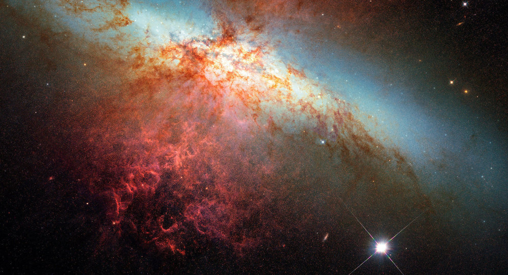

| Une supernova est l'ensemble des phénomènes conséquents à l'explosion d'une étoile. Cela s'accompagne d'une augmentation brève mais fantastiquement grande de sa luminosité. Vue depuis la Terre, une supernova apparaît donc souvent comme une étoile nouvelle, alors qu'elle correspond en réalité à la disparition d'une étoile. Elles ont eu et jouent encore un rôle essentiel dans l'histoire de l'Univers, car c'est lors de son explosion en supernova que l'étoile libère les éléments chimiques qu'elle a synthétisés au cours de son existence ( et pendant l'explosion même ) pour être diffusés dans le milieu interstellaire. De plus, l'onde de choc de la supernova favorise la formation de nouvelles étoiles en provoquant ou en accélérant la contraction de régions du milieu interstellaire. |
|
| La matière expulsée par une supernova s'étend dans l'espace, formant un type de nébuleuse appelé rémanent de supernova. La durée de vie de ce type de nébuleuse est relativement limitée, la matière étant éjectée à très grande vitesse (plusieurs milliers de kilomètres par seconde), le rémanent se dissipe relativement vite à l'échelle astronomique, en quelques centaines de milliers d'années. La nébuleuse de Gum ou les dentelles du Cygne sont des exemples de rémanents de supernova dans cet état très avancé de dilution dans le milieu interstellaire. La nébuleuse du Crabe est un exemple de rémanent jeune : l'éclat de l'explosion qui lui a donné naissance a atteint la Terre, il y a moins de mille ans. Il existe deux mécanismes en réalité assez distincts qui produisent une supernova : le premier résulte de l'explosion thermonucléaire d'un cadavre d'étoile appelé naine blanche, le second de l'implosion d'une étoile massive qui est encore le siège de réactions nucléaires au moment de l'implosion. Cette implosion est responsable de la dislocation des couches externes de l'étoile. Le premier mécanisme est appelé supernova thermonucléaire, le second supernova à effondrement de cœur. Un troisième mécanisme, encore incertain, mais s'apparentant au second, est susceptible de se produire au sein des étoiles les plus massives. Il est appelé supernova par production de paires. Historiquement, les supernovas étaient classifiées suivant leurs caractéristiques spectroscopiques. Cette classification est peu pertinente d'un point de vue physique. Seules les supernovas dites de type Ia (prononcé « 1 a ») sont thermonucléaires, toutes les autres étant à effondrement de cœur. |
Le processus à l'origine d'une supernova est extrêmement bref : il dure quelques millisecondes. Quant au phénomène lumineux rémanent, il peut durer plusieurs mois. Au maximum de luminosité de l'explosion, la magnitude absolue de l'astre peut atteindre -191, ce qui en fait un objet plus lumineux de plusieurs ordres de grandeur que les étoiles les plus brillantes : pendant cette période, la supernova peut « rayonner plus d'énergie » (et donc avoir une puissance plus grande) qu'une, voire plusieurs galaxies entières. C'est la raison pour laquelle une supernova se produisant dans notre propre galaxie, voire une galaxie proche, est souvent visible à l'œil nu, même en plein jour. Plusieurs supernovas historiques ont été décrites à des époques parfois très anciennes ; on interprète aujourd'hui ces apparitions d'« étoiles nouvelles » comme étant des supernovas.
Historiquement, les supernovas ont été classifiées en fonction de leur spectre, suivant deux types, notées par les chiffres romains I et II, lesquels contiennent plusieurs sous-types :
Parmi les supernovas de type I, on distingue trois sous-classes :
Concernant les supernovas de type II, on considère ensuite le spectre environ trois mois après le début de l'explosion :
À cela s'ajoute qu'en présence de particularités spectroscopiques, est accolée la lettre minuscule « p » (éventuellement précédée d'un tiret si un sous-type est présent), pour l'anglais peculiar. La dernière supernova proche, SN 1987A était dans ce cas. Son type spectroscopique est IIp.
Cette classification est en réalité assez éloignée de la réalité sous-jacente de ces objets. Il existe deux mécanismes physiques donnant lieu à une supernova
Quelques étoiles exceptionnellement massives peuvent produire une « hypernova » quand elles s'effondrent. Ce type d'explosion n'est cependant connu que théoriquement, il n'est pas encore confirmé par des observations. Dans une hypernova, le cœur de l'étoile s'effondre directement en un trou noir car il est devenu plus massif que la limite des « étoiles à neutrons ». Deux jets de plasma extrêmement énergétiques sont émis le long de l'axe de rotation de l'étoile à une vitesse proche de celle de la lumière. Ces jets émettent d'intenses rayons gamma et pourraient expliquer l'origine des sursauts gamma. En effet, si l'observateur se trouve dans (ou proche de) l'axe des jets, il recevra un signal qui pourrait être capté depuis le fin fond de l'Univers (horizon cosmologique).
Les supernovas de type I sont, toutes proportions gardées, considérablement plus brillantes que celles de type II. Ceci en luminosité électromagnétique. En revanche, les supernovas de type II sont intrinsèquement plus énergétiques que celles de type I. Les supernovas à effondrement de cœur (de type II) émettent la grande partie, voire la quasi-totalité, de leur énergie sous forme d'un rayonnement neutrinique. La plus brillante supernova observée en 400 ans a été repérée en 1987 au sein des vastes nuées de gaz de la nébuleuse de la Tarentule, dans le Grand Nuage de Magellan.
Les découvertes de supernovas sont déclarées au Bureau central des télégrammes astronomiques de l'Union astronomique internationale, qui émet un télégramme électronique avec la désignation qu'il assigne à la supernova. Cette désignation suit le format SN YYYYA ou SN YYYYaa où SN est l'abréviation de supernova, YYYY est l'année de découverte, A est une capitale latine et aa sont deux minuscules latines. Les 26 premières supernovas de l'année ont une lettre entre A et Z ; après Z, elles commencent par aa, ab, et ainsi de suite. Par exemple, SN 1987A, la supernova sans doute la plus célèbre des temps modernes, qui a été observée le 23 février 1987 dans le Grand Nuage de Magellan, était la première découverte cette année-là. C'est en 1982 que la première appellation à deux lettres (SN 1982aa, dans NGC 6052) fut nécessaire. Le nombre de supernovas découvertes chaque année a régulièrement cru.
Il a connu une augmentation considérable à partir de 1997, date de la mise en place de programme consacrés à la découverte de ces objets, notamment les supernovas thermonucléaires. Les premiers programmes spécialisés de grande envergure étaient le Supernova Cosmology Project, dirigé par Saul Perlmutter, et le High-Z Supernovae Search Team, dont le responsable était Brian P. Schmidt. Ces deux programmes ont permis en 1998 de découvrir l'accélération de l'expansion de l'Univers.
D'autres programmes spécialisés ont par la suite vu le jour, comme ESSENCE (également dirigé par Brian P. Schmitt) ou encore SNLS. Des grands relevés, comme le Sloan Digital Sky Survey ont également permis la découverte d'un grand nombre de supernovas. Le nombre de supernovas découvertes est ainsi passé de 96 en 1996 à 163 en 1997. Il était de 551 en 2006 ; la dernière découverte cette année-là était SN 2006ue.
|
Les supernovas sont des événements spectaculaires mais rares. Plusieurs ont été visibles à l'œil nu depuis l'invention de l'écriture, et le témoignage de leur observation est parvenu jusqu'à nous :
|
|
Quelques autres supernovas remarquables ont fait l'objet de nombreuses études, parmi lesquelles : |
 |
Si vous voulez consulter Wikipédia, cliquez ici .
Si vous voulez retourner en haut de la page, cliquez ici.
Pour passer à la page suivante , cliquez ici .